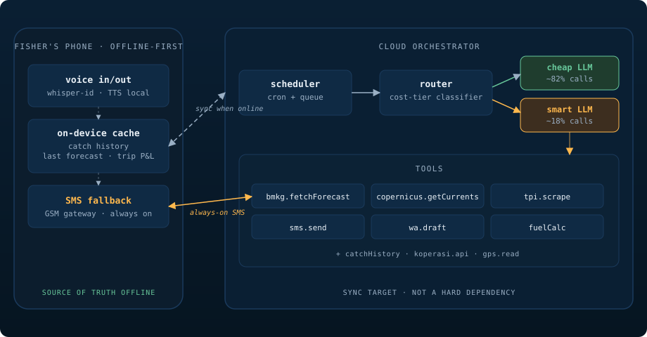

Concept stage · Pre-MVPTahap konsep · Pra-MVP概念阶段 · MVP之前
An autonomous agent
for Indonesia's small-boat fishers.
Agent otonom
untuk nelayan tradisional Indonesia.
为印尼传统渔民打造的 自主智能体。
Plans the trip before launch, watches the boat while at sea, and closes
the loop at the auction dock. One agent, three phases, designed around
offline-first reality and the price of every kilo of fuel.
Rencanakan trip sebelum berangkat, awasi kapal selama di laut, dan tutup
loop di TPI. Satu agent, tiga fase, dirancang untuk kondisi offline dan
harga tiap liter solar.
This isn't a chatbot answering questions. It's an autonomous loop with
tools, schedules, and decisions that fire whether or not the fisher is
looking at his phone.
Ini bukan chatbot tanya-jawab. Ini loop otonom dengan tools, jadwal, dan
keputusan yang jalan walaupun nelayan gak buka HP.
这不是问答聊天机器人，而是带工具、调度和决策的自主循环 — 即使渔民不看手机也持续运转。
01 · Pre-trip
Plan the run
Rencanakan trip
出海规划
Pull BMKG weather, current vectors, and tide tables. Cross with the
fisher's voice-logged catch history. Output: launch window, fuel
estimate, recommended bearings.
Tarik cuaca BMKG, vektor arus, jadwal pasang. Silang dengan catat
tangkapan suara nelayan. Output: window berangkat, estimasi solar,
rekomendasi rute.
Scheduled SMS heartbeats home with GPS pin. Weather change alerts on
satellite SMS gateway. Mid-trip catch logging via voice — no
keyboard, wet hands, sun glare.
Heartbeat SMS terjadwal ke keluarga + pin GPS. Alert perubahan cuaca
via gateway SMS satelit. Log tangkapan tengah-trip via suara — tanpa
keyboard, tangan basah, silau matahari.
Watch TPI auction prices across nearby ports. Recommend optimal
landing time and dock. Auto-draft a buyer message with the haul
list. Track expense vs. revenue per trip.
Pantau harga TPI di pelabuhan terdekat. Rekomendasi jam dan dermaga
optimal. Auto-draft pesan ke pembeli dengan list hasil. Track
pengeluaran vs pendapatan per trip.
Most of what this agent does is lookup, format, and schedule — work that
belongs on a small, fast, cheap model. Heavy reasoning fires only when
the trip needs it.
Mayoritas pekerjaan agent ini adalah lookup, format, jadwal — kerjaan
untuk model kecil, cepat, murah. Reasoning berat cuma trigger kalau trip
butuh.
智能体大部分工作是查询、格式化和调度 — 适合小而快、低成本的模型。仅在行程需要时才触发重推理。
82% · cheap tier
18% · smart
Cheap tier (82%)
Fetch BMKG. Format SMS. Compute fuel. Watch TPI prices. Log a
voice memo. Routine, structured, latency-tolerant.
Fetch BMKG. Format SMS. Hitung solar. Pantau harga TPI. Log voice
memo. Rutin, terstruktur, toleran latency.
获取 BMKG、格式化短信、计算油耗、监控 TPI 价格、语音备忘记录。日常、结构化、容忍延迟。
Smart tier (18%)
Cross-reference forecast vs. catch history. Decide
abort-vs-continue when weather shifts. Negotiate landing-window
tradeoff between fuel cost and TPI price.
Silang ramalan vs catat tangkapan. Putus abort-atau-lanjut saat
cuaca berubah. Negosiasi window darat antara biaya solar dan harga
TPI.
结合天气预报与捕捞历史。气候突变时决定中止或继续。在油耗与 TPI 价格间权衡靠岸窗口。
Architecture sketch
Sketsa arsitektur
架构草图
Offline-first device runtime. The phone caches everything; the cloud is
a sync target, not a hard dependency.
Runtime offline-first di HP. HP cache semua; cloud cuma target sync,
bukan dependency keras.
离线优先的设备端运行时。手机缓存一切，云端只是同步目标，不是硬依赖。

What's honest about today
Apa yang jujur soal hari ini
当前阶段的实话
This page is the project; the project is at concept stage. Here's what's
actually there and what isn't.
Halaman ini = project; project di tahap konsep. Ini yang nyata dan yang
belum.
本页就是项目本身；项目处于概念阶段。下面是真实情况与尚未实现的部分。
Honest framing
What exists today: this landing, an interactive
scripted demo of the 3-phase loop, a public BMKG API probe, and a
costed routing plan. No production users yet.
Yang ada hari ini: landing ini, demo interaktif
3-fase yang ter-skrip, probe API BMKG public, dan rencana routing
cost. Belum ada user produksi.
当前已有：本落地页、3 阶段交互脚本演示、BMKG 公共 API 探测、成本路由计划。尚无生产用户。
What's intentionally not in scope: sonar
integration (smallholder boats don't carry it), sat-phone hardware
(we lean on cheap GSM SMS gateways), and any kind of marine safety
authority claim.
Yang sengaja gak masuk scope: integrasi sonar
(kapal kecil gak punya), hardware sat-phone (kami pakai gateway SMS
GSM murah), dan claim jadi otoritas keselamatan laut.
The biggest open risk: connectivity at sea is
genuinely unreliable. Our design treats it as a constraint
(offline-first cache + SMS fallback) rather than a problem we'll
"solve later".
Risiko terbuka terbesar: konektivitas di laut
beneran goyang. Desain kami treat ini sebagai constraint
(cache offline-first + fallback SMS), bukan problem yang
"diberesin nanti".